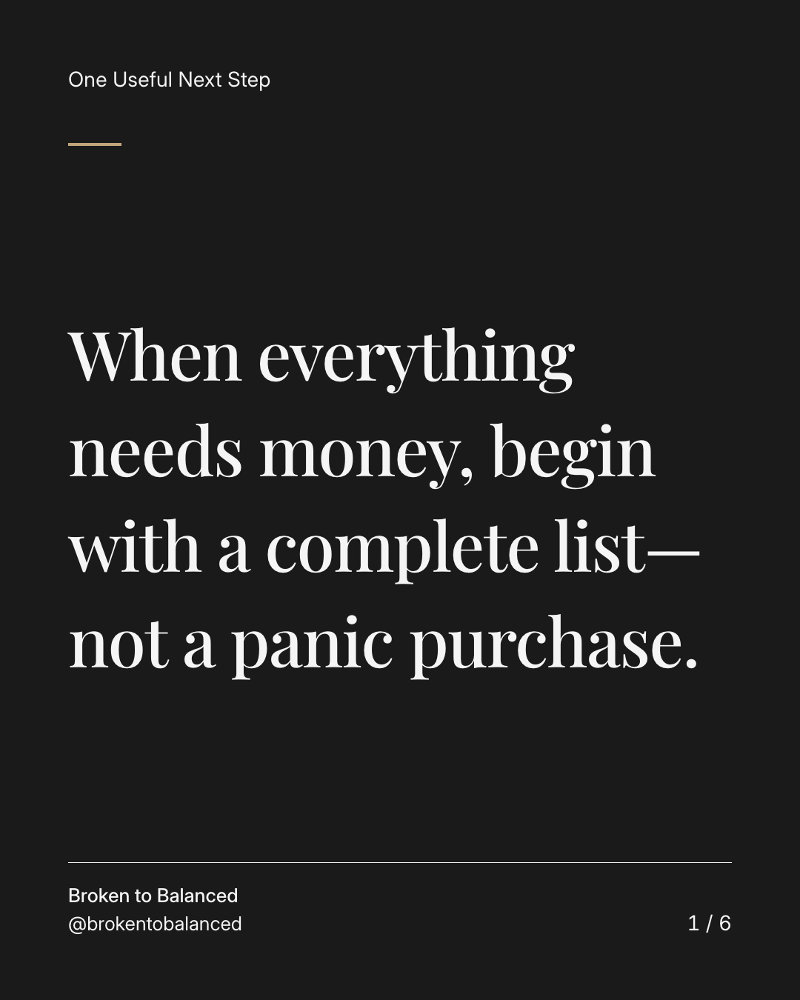
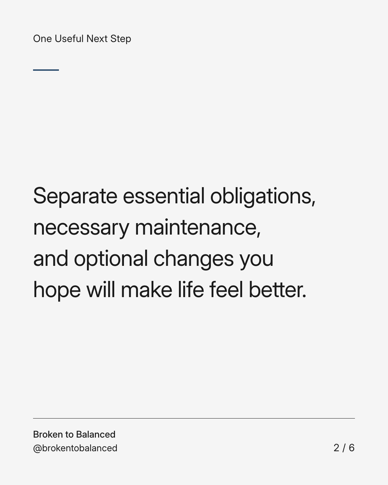
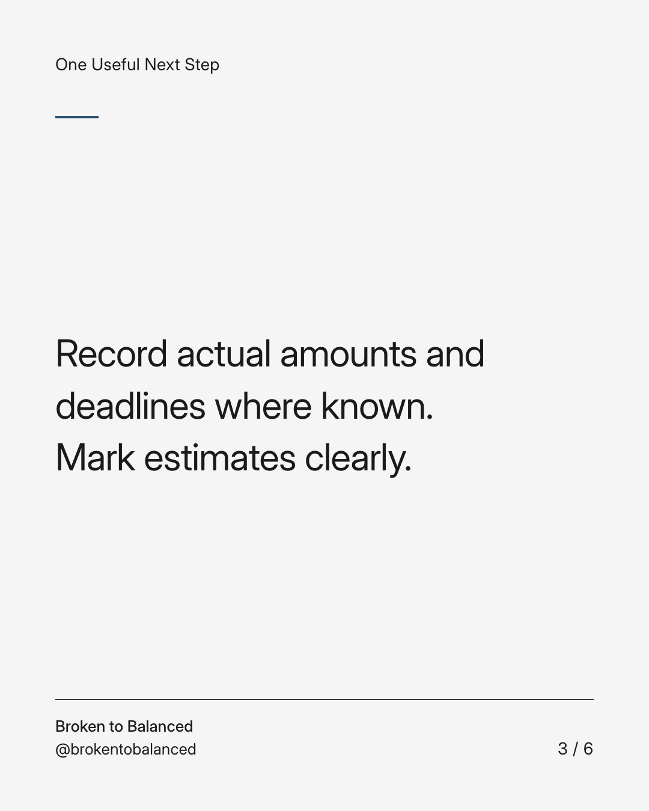
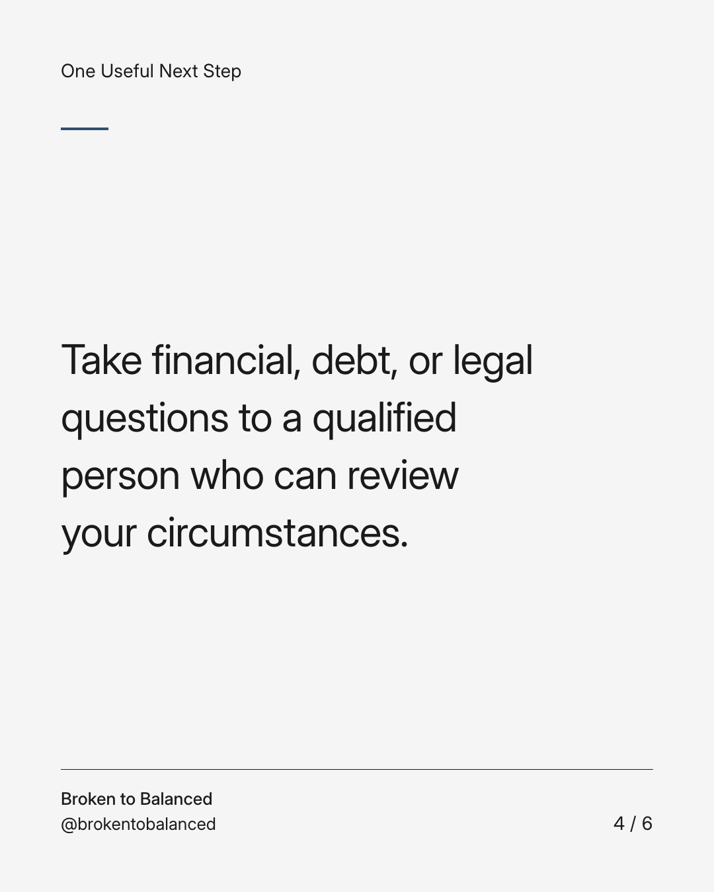
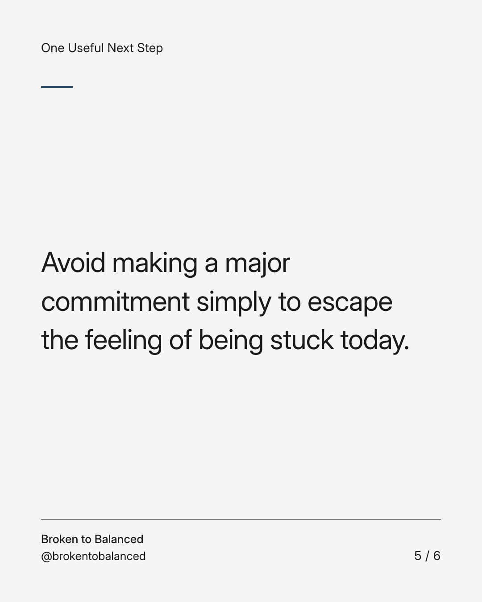
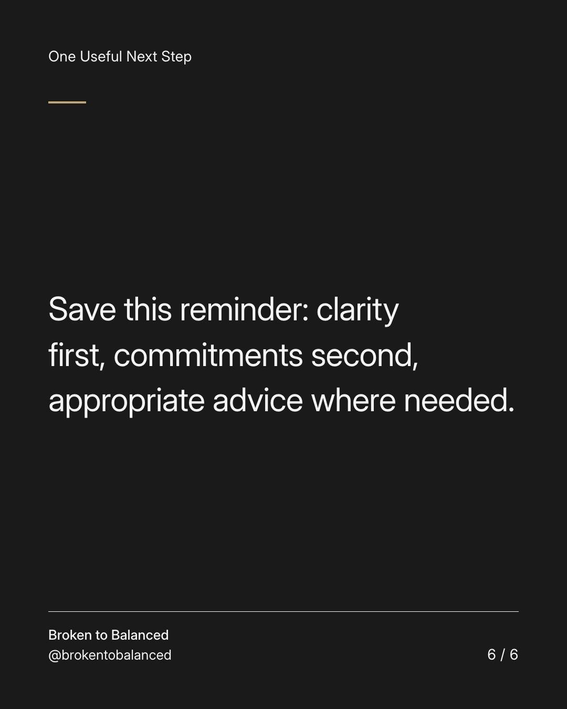

Exact text and accessibility text
When everything needs money, begin with a complete list—not a panic purchase.
Slide 1 of 6. When everything needs money, begin with a complete list—not a panic purchase.


Exact text and accessibility text
Separate essential obligations, necessary maintenance, and optional changes you hope will make life feel better.
Slide 2 of 6. Separate essential obligations, necessary maintenance, and optional changes you hope will make life feel better.


Exact text and accessibility text
Record actual amounts and deadlines where known. Mark estimates clearly.
Slide 3 of 6. Record actual amounts and deadlines where known. Mark estimates clearly.


Exact text and accessibility text
Take financial, debt, or legal questions to a qualified person who can review your circumstances.
Slide 4 of 6. Take financial, debt, or legal questions to a qualified person who can review your circumstances.


Exact text and accessibility text
Avoid making a major commitment simply to escape the feeling of being stuck today.
Slide 5 of 6. Avoid making a major commitment simply to escape the feeling of being stuck today.


Exact text and accessibility text
Save this reminder: clarity first, commitments second, appropriate advice where needed.
Slide 6 of 6. Save this reminder: clarity first, commitments second, appropriate advice where needed.
Exact caption
Plain-text fallback: select and copy the caption.